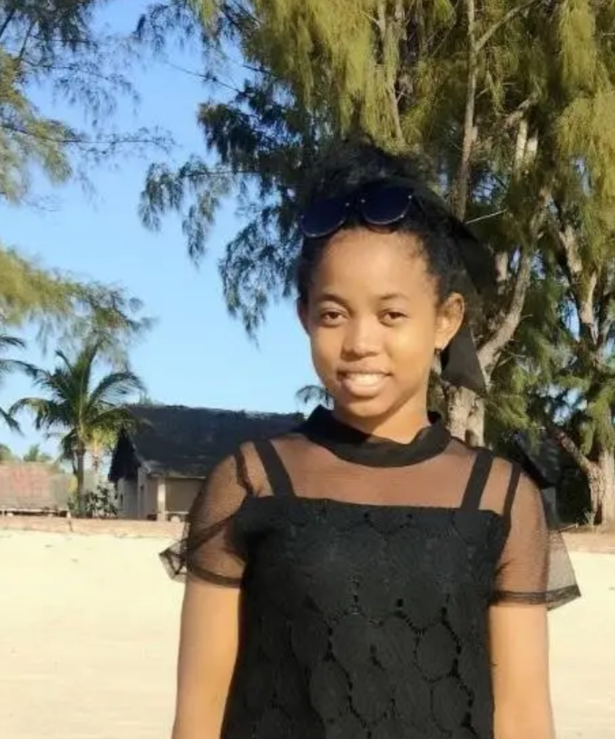

Professionnel expérimenté dans l’art de convaincre et de persuader, avec une forte capacité à influencer positivement les décisions et à créer des relations de confiance. Développeur web passionné par l’innovation technologique, je me suis immergé dans le développement web afin d’améliorer mes compétences dans la création de sites et d’applications web modernes et réactives. J’ai participé au développement et à la maintenance de sites web dynamiques et responsives pour des clients de divers secteurs. Passionné par la création de sites web fonctionnels, j’utilise les technologies HTML et CSS pour réaliser des interfaces attrayantes et performantes.
 Tananarivo Madagascar
Tananarivo Madagascar